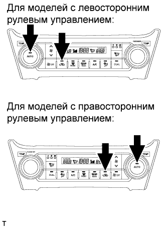
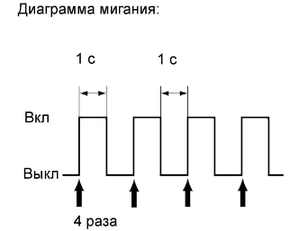
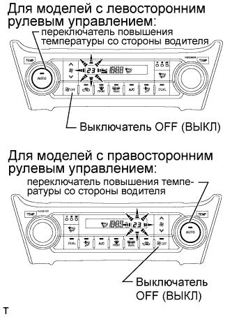

СИСТЕМА КОНДИЦИОНИРОВАНИЯ (для моделей с автоматическим кондиционером) > СИСТЕМА ДИАГНОСТИКИ |
| ОПИСАНИЕ |
Данные и диагностические коды неисправностей (DTC) системы кондиционирования можно считывать через разъем шины данных 3 (DLC3) автомобиля. Если предполагается, что система неисправна, произведите диагностику с помощью портативного диагностического прибора.
| ПРОВЕРЬТЕ DLC3 |
Проверьте DLC3 (Нажмите здесь).
| ОПИСАНИЕ МЕТОДОВ ДЕЙСТВИЙ |
Для входа в режим активной диагностики установите переключатели системы кондиционирования в положения, показанные на приведенной ниже схеме.
| ПРОВЕРКА ИНДИКАЦИИ |
|  |
Выключите зажигание.
Установите замок зажигания в положение ACC и подождите не менее 5 с.
Одновременно нажмите и удерживайте переключатель "AUTO" и переключатель рециркуляции/забора свежего воздуха системы кондиционирования, а затем включите зажигание. Продолжайте удерживать 2 переключателя, пока не активируется режим диагностики панели.
|  |
Убедитесь, что все индикаторы загораются и гаснут последовательно 4 раза с интервалом в 1 секунду.
| ПРОВЕРКА DTC (ПРОВЕРКА ДАТЧИКОВ) |
|  |
Запустите и прогрейте двигатель.
Выполните проверку индикации.
Считайте код, отображаемый на панели.
Если чтение кодов затруднено из-за их автоматического изменения, нажмите переключатель повышения температуры со стороны водителя, чтобы коды отображались поочередно для облегчения их чтения. При каждом нажатии переключателя повышения температуры со стороны водителя на дисплее будет отображаться очередной код.